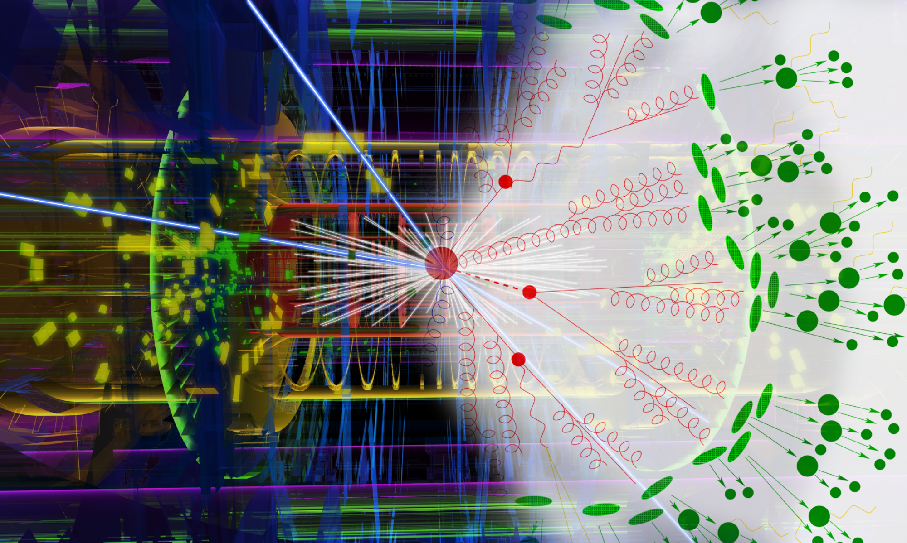

Dark Matter Day
6:00 PM, 31st October 2017
Seeing the Invisible
Come along to the Department of Physics on the 31st of October (Dark Matter Day!) for a chance to engage with some of the exciting science that we do. We will have interactive exhibits where you will learn about Dark Matter, what it is, what effects it causes and how we are trying to detect it right here in the North East!
The event will be at the new Physics building (picture right) and will start at 6:00 PM. We look forward to seeing you there!

Event Organisers
This exhibit is brought to you through a partnership between the Institute for Particle Physics Phenomenology and the Institute for Computational Cosmology. You can find out more about their individual exhibits on their websites below!
Modelling the Invisible
The Modelling the Invisible exhibit was first shown at the Royal Society Summer Science Festival 2017, and aims to teach the public about dark matter detection methods and the particle theory behind them.
Galaxy Makers
The Galaxy Makers exhibit was first shown at the Royal Society Summer Science Festival 2016, and continues today online where you can make your own galaxy and universe!